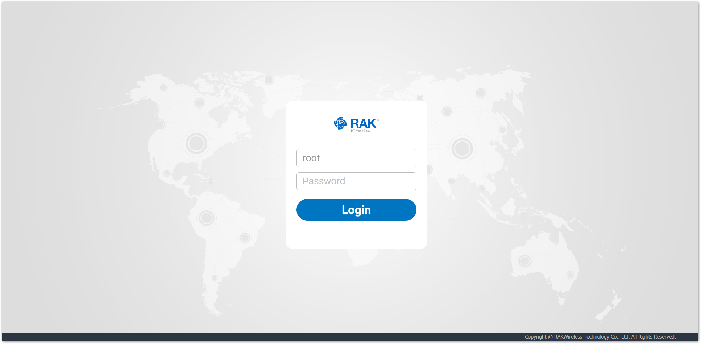
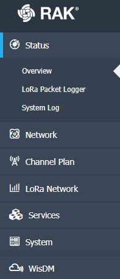
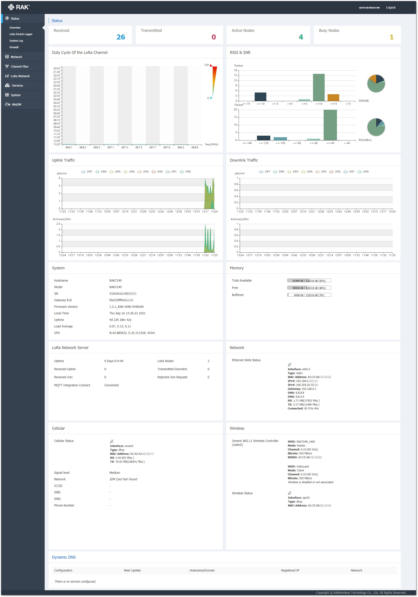
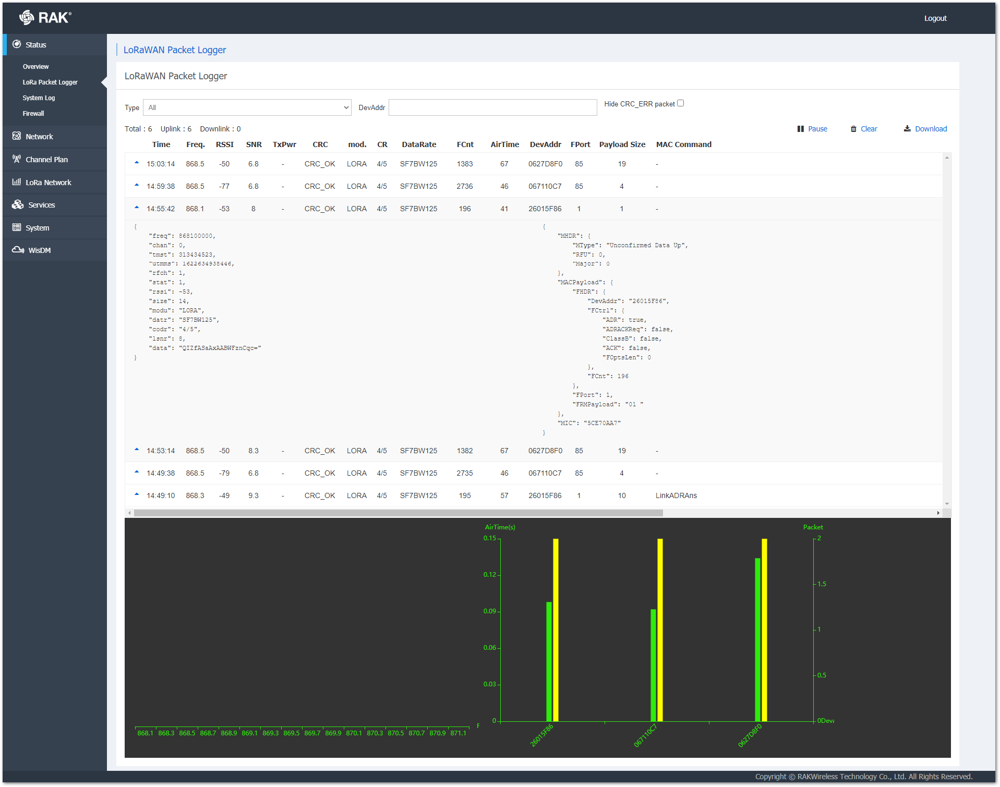
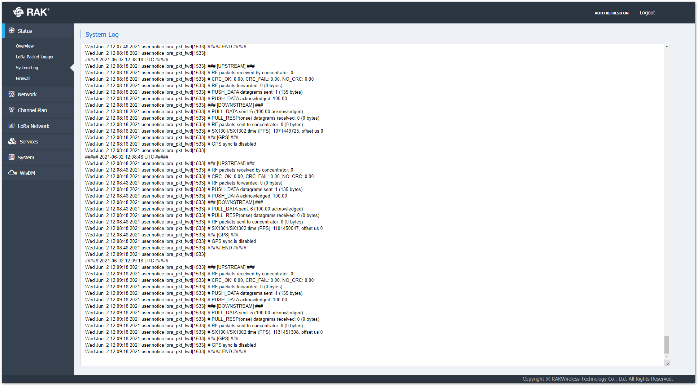

WisGate OS
WisGate OS功能架构
基于RAK7268C
firmware Version: WisGateOS_1.3.3

访问网络管理平台
Wi-Fi AP模式
SSID为 RAK72XX_xxxx无密码，连接wifi后，在浏览器输入网关默认的ip地址192.168.230.1
账号root, 密码 root
WAN口模式（DHCP IP)
使用一根网线连接网关的ETH口,另外一端接路由器，在路由器查看网关的IP地址，然后使用AP模式相同的方式即可访问网关

网络管理平台
网络管理平台主要包括Status, Network, Channel Plan, LoRa Network, Service, System, WisDM6个功能。

Status
实时监控网关业务的统计信息，包括 overview，Lora Packet Logger，System Log三个子模块。
Overview
上传/下发数据包的个数
在线/忙碌节点的个数
信道的占空比
上传/下发链路流量
系统信息
内存信息
LoRa network sever 状态
network状态
Cellular状态
wifi状态
DNS信息

Lora Packet Logger
实时显示lora上传/下发数据包的详细信息，支持信息的过滤。
图表区可以显示每个设备的飞行时间和信道使用情况。

System Log
显示网关完整的系统日志，用于调试的目的。

Network
包含Ethernet port, WAN Interface, Cellular Interface, Wi-Fi, Diagnostics, Firewall , Multi WAN7个子模块
Ethernet port
设置Ethernet port的类型，有两个选项WAN和 LAN
WAN Interface
显示WAN的状态，配置WAN的协议 支持Static address(静态地址)，DHCP(动态IP)，PPPoE(宽带拨号上网)，其实就是设置联网的3种方式，和路由器类似。
Cellular Interface
设置Cellular相关参数的页面，可以打开/关系蜂窝功能。
Wi-Fi
设置Wi-Fi相关参数的页面，可以设定wifi信道及工作模式。
工作模式有以下三种，每种模式下都有对应的设置。
- Access point
- Client
- Access Point + Client
Diagnostics
有三种方法来执行诊断功能
- Ping
- Traceroute
- Nslookup
Firewall
防火墙功能包含以下4个子模块。
General Settings
Port Forwards
Traffic Rules
Custom Rules
Multi WAN
为网关的多种接口设置连接到Internet的优先级，如Ethernet，Wi-Fi， Cellular,当优先级高的出现故障时可使用其他线路。
该页面还可以显示当前连接到Internet的端口。
Channel Plan
设置LoRaWAN地区，例如915M频段可选设置有
- US902-928 北美
- AU915-928 澳大利亚 新西兰
- AS923 亚太地区 日本、新加坡和中国台湾
- KR902-923 韩国
设置 是否符合LoRaWAN 协议
LoRa Network
Network Settings
- Packet Forwarder
- Basic Station
- Network Server
- Network Server Status
- Gateway
- Application
- Global Integration
- Multicast Group
Packet Forwarder 和Basic Station 模式，需要连接第三方的云服务器如TTN等。节点的添加也是在云服务器上。
Network Server 模式，内置LoRa服务器，可以直接添加节点。
Multicast Group 创建和管理多组用于批量操作下行链路
Service
Dynamic DNS 配置动态DNS，可以使用固定主机名访问网，同时具有动态变化的IP地址
OpenVPN Tunnels 虚拟专用通道，是提供给企业之间或者个人与公司之间安全数据传输的隧道
System
system 设置时间 主机名称 时区，日志记录方法，语言，呼吸灯
administration 修改密码
Backup/Flash firmware
reboot
File Browser
WisDM
enable WisDM
enable FOTA
Firmware Over-The-Air 固件空中升级